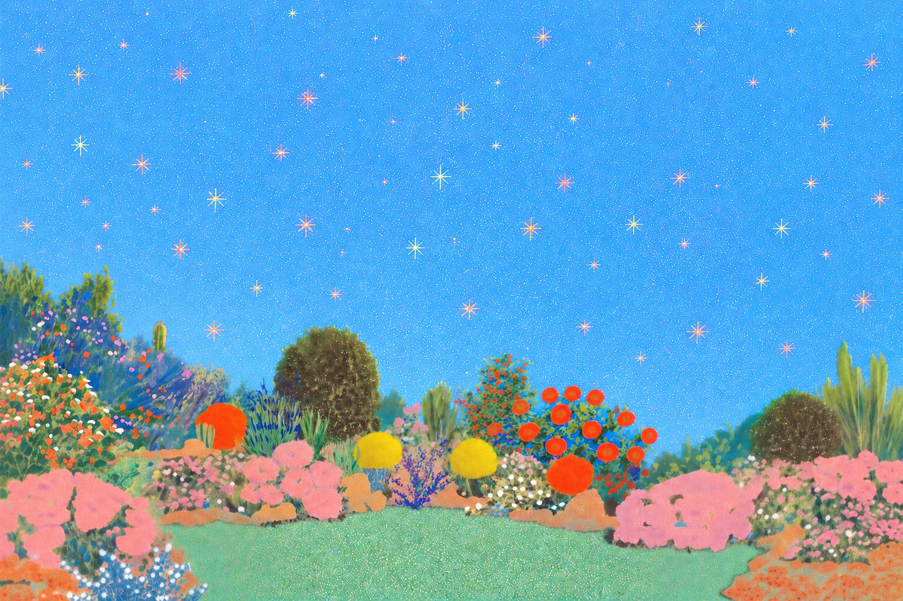

where the everyday slips into a dream ✦ where the everyday slips into a dream ✦
Confetti Life — a visual world by Lee Seori,
built from ordinary scenes, vivid color, and a quiet unreality.
City walks, fruit, flowers, cafe tables —
ordinary things, slipped slightly out of the real.